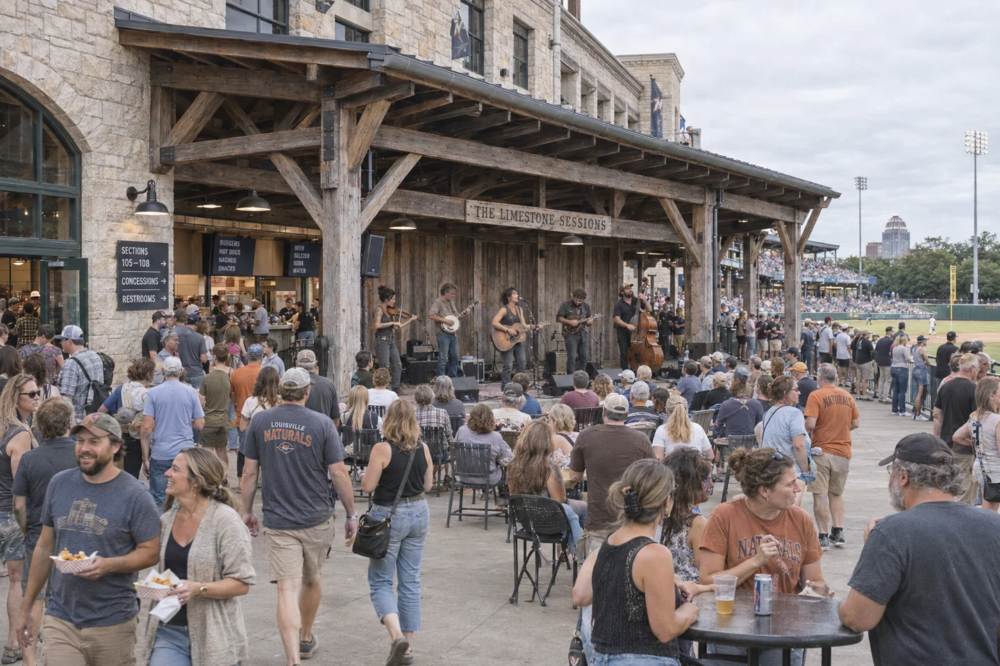
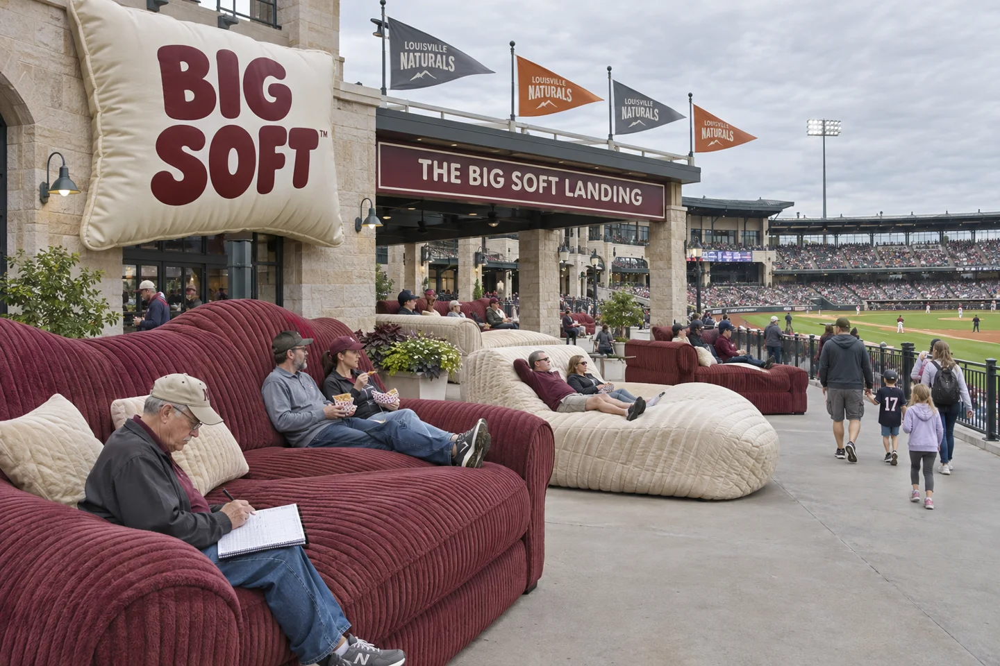
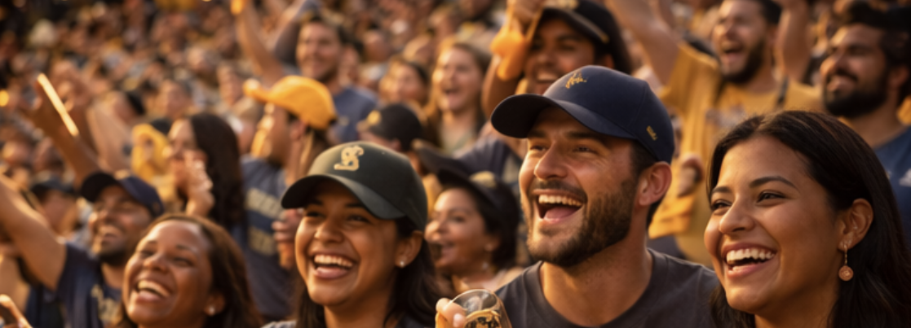

Hank Mercer
Play-by-play. Keeps the count clear and leaves room for the crowd.

A porch set. A ballgame. Stay a while.
The Limestone Sessions →Manager: Everett “Fieldnote” Lane · Home: The Limestone Grounds
View standings →| Pic | Player | Pos | B/T | Age |
|---|---|---|---|---|
 |
Aurélien Bastide | SP | R/R | 29 |
 |
Calder Ryzan | SP | L/L | 26 |
 |
Eun-seok Choi | SP | R/R | 28 |
 |
Nasir Darzi | SP | R/R | 31 |
 |
Tiago Muniz | SP | L/R | 25 |
 |
Oscar Vintner | RP | R/R | 27 |
 |
Kaito Suzume | RP | R/R | 24 |
 |
Maia Kenrick | RP | L/L | 30 |
 |
Rubén Castel | C | R/R | 28 |
 |
Oren Khouri | 1B | L/R | 32 |
 |
Santino Pereda | 2B | S/R | 23 |
 |
Dexter Úbeda | SS | R/R | 27 |
 |
Jonah Ramorin | 3B | R/R | 29 |
 |
Isaac Nyambe | CF | R/R | 26 |
 |
Mateo Salvat | LF | L/L | 24 |
 |
Viktor Helmer | RF | R/R | 31 |
Fiddle, banjo, mandolin, acoustic guitar and upright bass spill off the wide porch. Close harmonies ride above the picking; people gather near the stage, stop with their food or listen from the concourse tables.
The crew brings a raw edge to the set. The porch belongs to the park, with the game still in view beyond the crowd.
BIG SOFT makes mattresses, pillows and bedding. Its cream-and-burgundy lettering turns up on oversized cushions, the lounge terrace and one extremely upholstered Cadillac.
The brand takes comfort seriously. Everyone else is welcome to find that funny.

Enormous sofas and quilted loungers overlook the field. Take a seat, disappear slightly into the upholstery, and keep an eye on the game. The armrests are bigger than some people’s seats elsewhere in the park.

Flo brings an older Cadillac Coupe de Ville in cream and burgundy, with quilted body panels, oversized polished wheels and BIG SOFT across the doors. A small pillow sits in the plush rear cabin.
She works the hydraulics from the driver’s seat while the crew watches the DONK height gauge. Flo remains almost impressively unimpressed.

Stone, grass and open sightlines. The broad concourse connects the seating bowl, the Sessions porch and the Big Soft Landing.
Play-by-play. Keeps the count clear and leaves room for the crowd.

In-stadium announcer. Lineups, substitutions and announcements carry across the Grounds.

A towering head of wheat, a green Naturals jersey and well-worn work boots. Sprig makes the rounds with a groundskeeper’s broom and a look of permanent mild suspicion. A stray piece of popcorn merits a full inspection.

The Yard Walkers keep their route around the park: a stop at the rail, a conversation on the concourse, a song before returning to their seats.